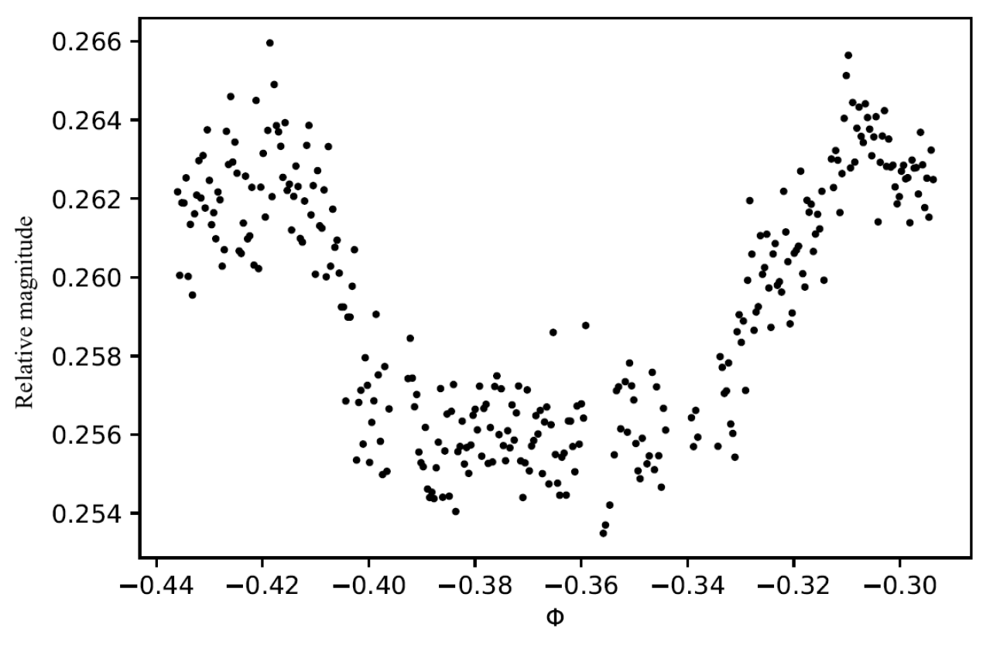
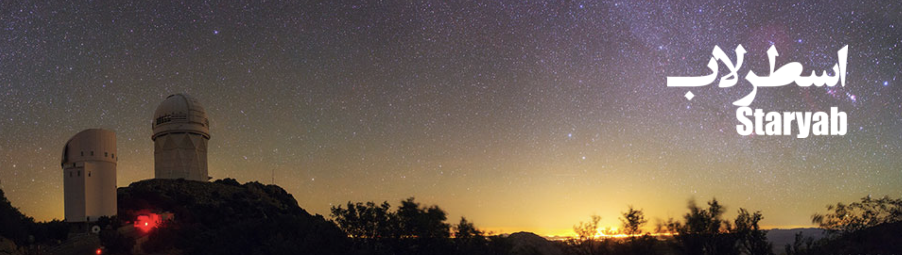
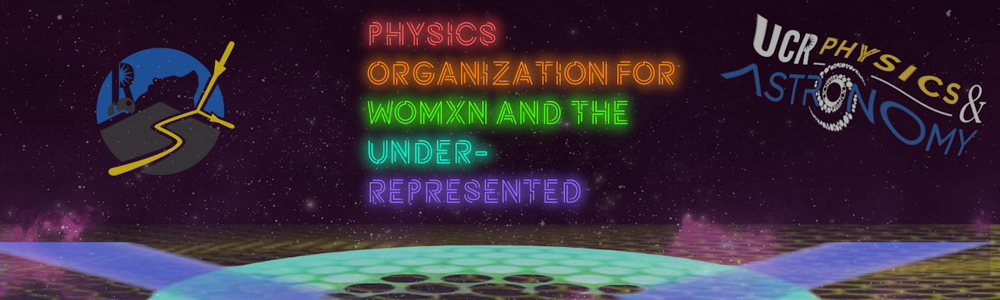
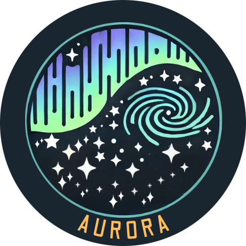

PhD student in Physics and Astronomy at UC Riverside, studying how galaxies grew in the first billion years after the Big Bang.
I'm Faezeh!
I am a PhD student in the Department of Physics and Astronomy at UC Riverside, where I started in 2023, under the supervision of Dr. Brian Siana and co-supervised by Dr. John Weaver. I study the universe when it was young enough that we know very little about it. My main tools are space and ground-based telescopes, and of course, some languages other than human ones (for programming, of course!).
Research
I did my bachelor's in physics at Shiraz University. At that time, I was fortunate to be a member of a research group at Biruni Observatory in Shiraz, working under the supervision of Dr. Moein Mosleh. I did my undergraduate thesis on observing transiting exoplanets, collecting the data myself at the observatory and performing all the data reduction and analysis. After graduating, I joined a research group at the Institute for Research in Fundamental Sciences (IPM) in Tehran as a postbaccalaureate researcher, working with Dr. Atefeh Javadi on the star formation history of the dwarf galaxy NGC 6822.
Currently, I am a PhD student at the University of California, Riverside. My main research project is to study the evolution of galaxies at high redshift using photometric and spectroscopic data. My primary research interests are centered on understanding the burstiness of star formation and investigating the spatially resolved properties of massive, evolved systems at high redshifts. I aim to explore their formation mechanisms, evolutionary pathways, and their role in the broader context of galaxy evolution across cosmic time.
Burstiness in dwarf galaxies at 0.5 < z < 2.3
Bursty star formation is well studied in low-mass galaxies in the local Universe, and JWST now lets us look for it at higher redshift. Using NIRISS grism spectroscopy from GLASS, rest-frame UV imaging from HST, and multiwavelength photometry from UNCOVER and MegaScience, I measure the burstiness of star formation in more than 150 galaxies behind the Abell 2744 cluster. Strong lensing by the cluster extends the sample down to dwarfs with stellar masses as low as M★ ~ 107 M☉. Comparing Hα with rest-frame UV emission, which trace star formation over roughly 10 and 100 Myr, gives tentative evidence that dwarf galaxies become increasingly bursty from the local Universe out to z > 0.5.
BEASTS in the BUBBLES
BEASTS is a JWST Cycle 1 GO Program that will use the NIRSpec Integral Field Unit (IFU) to study the most luminous galaxies at z~9, only 500 million years after the Big Bang. Using the spatially-resolved power of IFU spectroscopy, BEASTS will reveal the physical processes responsible for the extreme UV luminosities of these galaxies, including their star-formation rates, stellar masses, and dust extinction. These insights will be invaluable for refining models of galaxy formation, and for understanding the existence of ultra-massive galaxies at later epochs in the history of the cosmos.
Observation of transiting exoplanets
In my undergraduate project, under the supervision of Dr. Moein Mosleh at Biruni Observatory, Shiraz, Iran, I observed and collected data for the transiting exoplanet HAT-P-32b using the observatory's telescope. I selected the target using the Exoplanet Transit Database (ETD) and successfully observed two consecutive transits in the V and B bands. I performed data reduction, image processing, and applied differential photometry to calibrate the images. Finally, I made the transit light curve and used ELCA to extract key parameters, referencing the original discovery paper of HAT-P-32b.

Publications
My full name is Faezehsadat Akhlaghimanesh, but I use Faezeh Manesh for papers and in most places. You can find all my published work on my Google Scholar profile.
[1] Manesh, F., Weaver, J., et al. (in preparation). Unveiling Fast-Forming Galaxies at Cosmic Dawn.
[2] Watson, P. J., et al. (incl. Manesh, F.), 2026. Spatially Resolved Nebular-Stellar Reddening with JWST/NIRISS .
[3] de la Vega, A., et al. (incl. Manesh, F.), 2025. The Fraction of Clumpy Galaxies in JWST Surveys over 2 < z < 12 .
[4] Taamoli, S., et al. (incl. Manesh, F.), 2024. COSMOS2020: Disentangling the Role of Mass and Environment in Star Formation Activity of Galaxies at 0.4 < z < 4 .
Community engagement & outreach
At the beginning of my undergraduate studies, I was fortunate to join the outreach team at Biruni Observatory. As part of this team, I helped organize events such as stargazing nights, public lectures, and guided tours, showcasing the observatory's facilities and telescopes. This experience allowed me to share my passion for astronomy, help others appreciate the beauty of the universe, and discover how fulfilling it is to inspire curiosity and wonder in others. As a graduate student now, I'm deeply passionate about continuing to contribute to outreach events. If you have any ideas or projects in mind, I'd be more than happy to hear them and get involved!
Staryab
I am a co-manager and author at Staryab, a monthly astrophysical literature website in Farsi, run by Iranian astronomers from around the world. Staryab aims to bridge the gap between professional astronomy and those at the start of their journey — undergraduate students in physics and astronomy, passionate high school students, and amateur astronomers. Each month, we feature a paper and present it in a clear, accessible format for our readers. These articles are prepared by Iranian professional astronomers, both within Iran and abroad. If you're interested in contributing to Staryab, don't hesitate to get in touch — we'd love to hear from you!
Staryab on Instagram
POWUR
I am the president of POWUR, the Physics Organization for Womxn and the Under-Represented. POWUR's aim is to create a community focused on equity and self-advocacy for all members of the Department of Physics and Astronomy. We do this by holding different events such as socials, movie nights, Inclusivity Seminars, Mental Health Panels, book clubs, and more. If you're interested in sharing your work and engaging in discussions with us at UCR, please get in touch! We would love to have you join us. Check out our website to learn more!
POWUR on Instagram
AURORA
I am a core member of AURORA, the Astronomy Union for Reading, Outreach, and Research Activities. I am actively involved in organizing events and initiatives to create a vibrant and engaging community for graduate students in astronomy at UCR and beyond. Currently, we are reaching out to scientists — including faculty, postdocs, and especially graduate students — from around the world to invite them to share their exciting research. Our goal is to foster discussions and explore different research fields together. If you're interested in sharing your work and engaging in discussions with us at UCR, please get in touch! We would love to have you join us!
AURORA on InstagramAURORA on YouTube

CV & highlights
Education
- PhD in Astronomy (expected 2028)
University of California, Riverside, California - MSc in Astronomy (2024)
University of California, Riverside, California - BSc in Physics (2022)
Shiraz University, Shiraz, Iran
Positions
- Graduate Research Assistant (2023–present)
University of California, Riverside, CA - Postbaccalaureate Researcher (2022–2023)
Institute for Research in Fundamental Sciences, Tehran, Iran - Undergraduate Research Assistant (2018–2022)
Biruni Observatory, Shiraz University, Shiraz, Iran